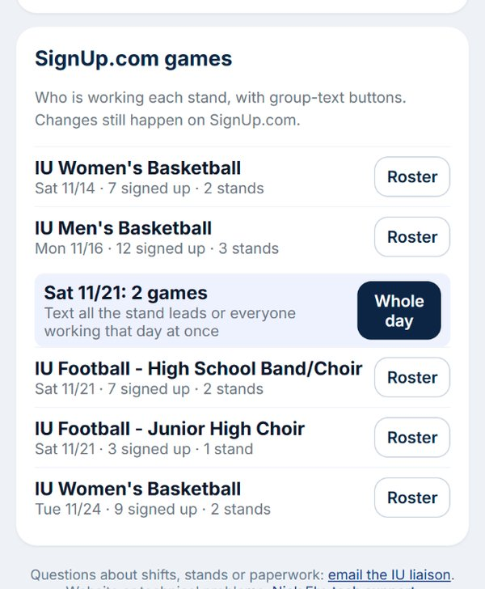
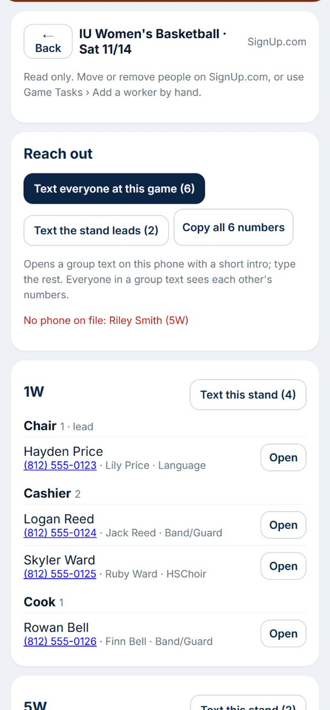
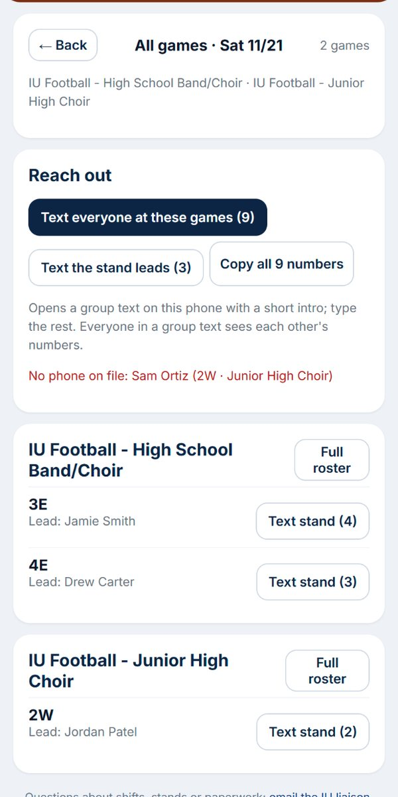

0:56, with narration. Turn on captions (CC) to watch with the sound off. The volunteers, games and phone numbers shown are made up.
1
The list
SignUp.com games from two days ago on. Days with more than one game get a Whole day button.

2
A SignUp.com roster
Read only. Each stand lists its people with phone, credit and program. Open goes to their page.

3
The whole day
Every game that day, each stand with its lead, plus Reach out for all of them at once.

Admin guide series
- 1Open the admin view
- 2Look up a volunteer
- 3Act for a volunteer
- 4Stands and time sheets
- 5Hub game rosters: add someone
- 6Move, hand off, remove
- 7SignUp.com games and the whole day
- 8Reach out: group texts
- 9The volunteer directory
- 10Manage stands
- 11Admin levels
- 12Paperwork review
- 13Approve stand logs
- 14No-show decisions
- 15Cancel a stand or game
- 16Send stand sheets
- 17Add a worker by hand
- 18Family manager requests
- 19Fix a name or a code
- 20Hub health